1ICP：给位姿「精修」
第 5 章的位姿估计仍可能存在误差，抓取对这些误差的敏感性取决于物体尺寸、接触位置和夹爪策略。可以先理解为：对细长物体或较窄的可抓取区域，较小的平移误差也可能使抓取偏离目标。
| 场景 | 位姿误差的影响 |
|---|---|
| 可抓取区域较窄、平移偏离目标 | 可能错过接触区域；阈值取决于具体实验 |
| 细长物体（粉笔、剪刀） | 需结合物体与夹爪尺寸判断允许误差 |
| 旋转误差（如绕 z 轴 30°） | 是否宽容取决于形状、对称性与抓取方向 |
敏感性的三个来源：① 机械臂运动误差——特定方向的平移误差可能推翻物体；② 夹爪闭合策略——开合宽度必须与物体尺寸精确匹配；③ 旋转容错性取决于物体与抓取方向。
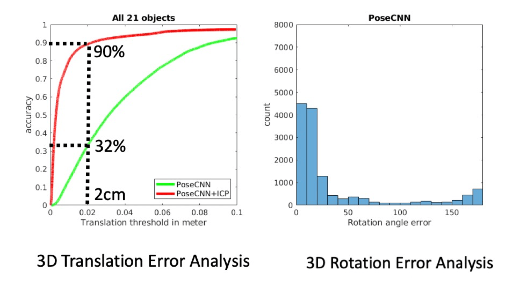
All 21 objects＝全部21个物体；accuracy＝准确率；Translation threshold in meter＝平移误差阈值（米）；左图比较PoseCNN与PoseCNN+ICP；3D Translation Error Analysis＝三维平移误差分析；右图count＝计数，Rotation angle error＝旋转角误差。2cm处的32%和90%属于该实验设置。
结论：初始估计 + 精修（refinement）是位姿估计的一种常见设计，ICP 就是最经典的「精修」工具。
2ICP 算法详解
迭代最近点（Iterative Closest Point, ICP）：输入两个点云，通过交替匹配与刚体拟合，估计使源点云对齐目标点云的 $(R,t)$；通常只能保证局部结果（课件 p10）：
$$ E(R,t)=\sum_i\min_j\|q_j-(Rp_i+t)\|^2 $$
这里 $p_i$ 为源点、$q_j$ 为目标点，$R,t$把源变到目标，单向目标中每个源点只与一个当前最近目标点配对；点数可不同。对于固定对应，才可写成矩阵平方误差。
ICP 在第 5 章的 Procrustes 拟合外加入最近邻匹配，并交替执行这两个步骤。标准点到点实现可以写成以下四步循环：
步骤 1：在当前位姿下查找对应
把源点云用当前估计变换到目标坐标系，对每个源点 $p_i$ 查找最近目标点 $q_{j_i}$。初值来自已有估计；教学例子的初值可取单位变换。匹配时使用当前变换后的坐标；获得对应点后，再计算配对点集的质心。这样可保留部分重叠点云在当前坐标系中的位置关系。
步骤 2：中心化已经配对的两组点
令 $Q_{corr}$ 的第 $i$ 列为对应目标点 $q_{j_i}$。计算 $\tilde P=P-\bar P$ 与 $\tilde Q_{corr}=Q_{corr}-\bar Q_{corr}$，均值来自当前匹配点对。最近邻查询的暴力复杂度是 $O(|P|\,|Q|)$，KD-tree（KD树）可加速。这里用的是单向最近邻目标；Chamfer距离另有双向定义。
步骤 3：Procrustes 求位姿
第 5 章的内容直接复用：协方差矩阵 $K = \tilde Q_{corr}\tilde P^\top$ → SVD → $\hat{R} = U\,\mathrm{diag}(1,1,\det(UV^\top))\,V^\top$ → $\hat t = \bar Q_{corr} - \hat R\bar P$。
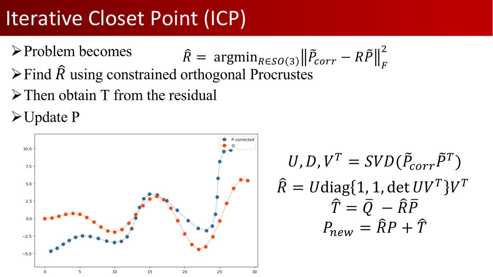
把已配对点的拟合转成带约束正交Procrustes问题
用SVD求R，并用残差求T
更新P_new=R P+T
页面给出R=U diag(1,1,det(UVᵀ)) Vᵀ。
读图提示：目标对应矩阵与源矩阵交叉乘积决定SVD方向。求平移时使用当前匹配目标点的均值；课件写全Q均值的示例只适合对应及均值假设成立的情况。
步骤 4：更新与迭代
$P_{new} = \hat{R}P + \hat{t}\mathbf{1}^\top$，作为下一轮输入。终止条件三选一（课件 p15）：相对旋转角与平移增量足够小 / 损失变化小于阈值 / 达到最大迭代次数；迭代停止后，用残差、重叠区域和位姿误差评价配准结果。
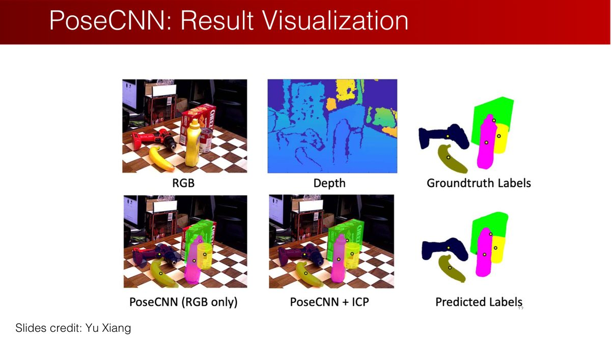
RGB＝彩色图像
Depth＝深度
Groundtruth Labels＝真实标签
PoseCNN (RGB only)＝仅RGB输入的PoseCNN
PoseCNN+ICP＝加ICP精修
Predicted Labels＝预测标签
图源Yu Xiang。
读图提示：对照叠加模型和物体轮廓；先检验目标分割与深度，再判断精修是否真正改善。
2.1 ICP 不保证全局正确配准
对应点匹配可能产生非一一映射——好几个源点离同一个目标点最近。此时不存在完美变换（刚体变换不可能把两个不同源点精确合并成同一个目标点），ICP 可能卡在局部最优。标准点到点 ICP 在最近邻匹配与刚体子问题精确求解时使目标单调不增，但不保证全局最优或正确配准；初始位姿接近真实值时，可用它做局部精修。
2.2 优缺点与变体
| 优点 | 缺点 |
|---|---|
| 核心算法简单，不强制使用特征；物体场景常仍需目标区域选择或离群点剔除 | 最近邻计算贵（可下采样/小样本加速） |
| 初始估计较好时精度与收敛性都不错 | 迭代次数多、耗时（后来有加速算法） |
| — | 只考虑点对点距离，未利用点云结构 |
| — | 高度依赖初始估计 |
变体（课件 p17）：Point-to-Plane ICP 用源点到目标点局部平面的距离，考虑了局部结构；Plane-to-Plane ICP 同时考虑源点云的局部结构，可改善特定几何与噪声条件下的收敛表现，但仍需检查初值与法向估计。
3类别级位姿估计：NOCS
实例级方法（PoseCNN 等）要求知道每个物体的完整 CAD 模型——经典实例特定设定难以直接用于未见物体。类别级方法（王鹤老师 CVPR 2019 Oral，NOCS）换了个思路：为整个类别建立一个统一的参考系，通过三步归一化定义标准化物体空间（Normalized Object Coordinate Space）：
- 旋转对齐（Rotation Alignment）：用先验把物体朝向对齐（如茶杯手柄统一朝某轴正方向）；
- 平移归一化（Translation Normalization）：包围盒中心移到原点；
- 尺寸归一化（Scale Normalization）：用同一个比例缩放各轴，使包围盒对角线长度为1并装入标准立方体，保留长宽高比例。
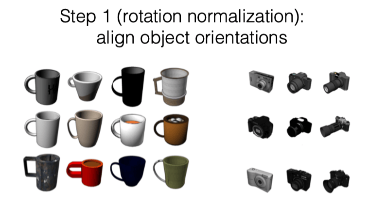
Step 1 (rotation normalization): align object orientations＝第一步（旋转归一化）：统一物体朝向。杯子与相机分别按类别的规范方向排列；这定义坐标约定，不表示测试时已知真实朝向。
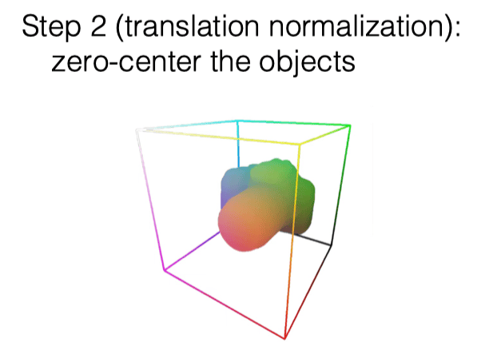
Step 2 (translation normalization): zero-center the objects＝第二步（平移归一化）：使物体以零为中心。规范原点与相机空间中的实际位置是两回事。
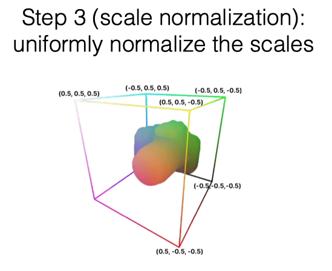
Step 3 (scale normalization): uniformly normalize the scales＝第三步（尺度归一化）：使用同一比例缩放各轴。图中坐标以−0.5到0.5示意中心化规范空间；实现若改用[0,1]，需先统一坐标再拟合。
NOCS点 $p_N$ 没有米这样的度量单位，深度点 $p_C$ 通常有长度单位；拟合 $p_C=sRp_N+t$ 时，$s$恢复尺度，$R$恢复朝向，$t$恢复位置。原课件图示中心化的 $[-0.5,0.5]^3$空间，工程也可采用 $[0,1]^3$编码；若两者混用，会把原点偏移错误地计入平移。三条物体尺寸由规范点包围盒的轴向范围乘尺度得到。归一化时，各轴使用同一缩放比例，保留物体的长宽高比例。
拿茶杯举例：① 手柄方向统一 → 对齐 $R$；② 物体轴对齐包围盒中心放到 $(0,0,0)$ → 对齐 $t$；③ 归一化包围盒大小 → 对齐 size。
3.1 完整推理流程
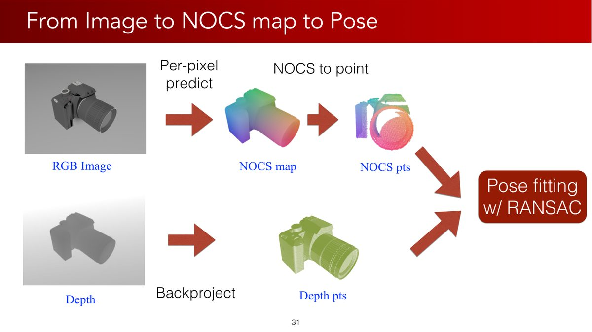
Per-pixel predict＝逐像素预测
RGB Image＝彩色图
NOCS map＝规范坐标图
NOCS to point＝将规范坐标图取成点集
Depth＝深度
Backproject＝反投影
Depth pts＝深度点
Pose fitting w/ RANSAC＝结合RANSAC拟合位姿。
读图提示：同一物体像素给出一对坐标：预测的规范三维坐标与由深度反投影得到的相机三维坐标。反投影的是像素深度，不是NOCS坐标。
- 输入 RGBD，Mask R-CNN 检测分割物体（ROI）；
- 对物体每个像素预测其 NOCS 坐标 $(x,y,z)$，得到 NOCS Map；
- 用每个像素的深度与相机内参反投影出相机坐标中的三维点，与该像素预测的NOCS三维坐标配成点对；
- 用 Umeyama 算法 + RANSAC 拟合 7 DoF 相似变换（缩放 $s$ + 旋转 $R$ + 平移 $t$）：$sR\mathbf{p}_i + t = \mathbf{q}_i$。
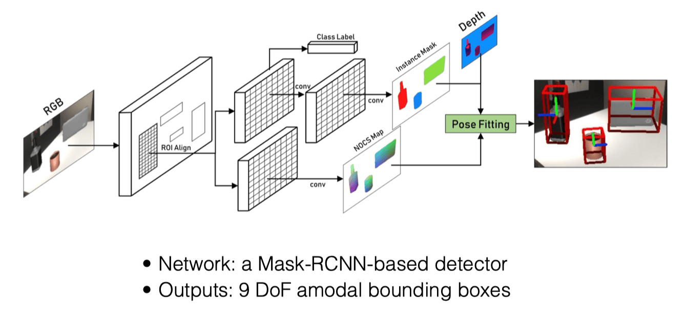
Network: a Mask-RCNN-based detector＝基于Mask R-CNN的检测器；Class Label＝类别标签；ROI Align＝区域对齐；Instance Mask＝实例掩码；NOCS Map＝规范坐标图；Depth＝深度；Pose Fitting＝位姿拟合；Outputs: 9 DoF amodal bounding boxes＝输出9自由度完整包围盒，包括位姿和三条尺寸。
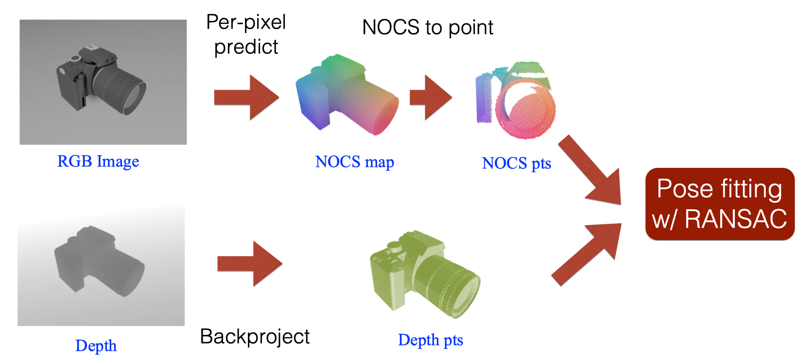
Per-pixel predict＝逐像素预测；RGB Image＝彩色图像；NOCS map／pts＝规范坐标图／点集；NOCS to point＝从规范坐标图取出点集；Depth＝深度；Backproject＝反投影；Depth pts＝深度点；Pose fitting w/ RANSAC＝结合RANSAC拟合位姿。同一像素把两种坐标配成一对。
3.2 NOCS 与 ICP 的本质区别
| ICP | NOCS | |
|---|---|---|
| 先验 | 需要待配准的两组点云；用于物体精修时常使用CAD采样云 | 弱：类别级粗几何先验（NOCS 空间） |
| 对应关系 | 迭代最近邻匹配（不保证全局正确配准、需迭代） | 同一像素建立预测规范坐标与深度三维点的配对；预测本身仍可能有误 |
| 输出 | 6 DoF $(R,t)$ | 7 DoF $(s,R,t)$ + 尺寸 |
| 求解 | 迭代 Procrustes | 给定内点对应后Umeyama闭式求解；RANSAC还需多次假设检验 |
3.3 为什么不直接回归 6D 位姿？
笔记给出三条理由：① 课件的特定消融实验中，NOCS优于该直接回归基线；② 直观上，回归是 3D→6D 的直接映射，而 NOCS 先建 2D→3D 对应、再把位姿变成几何优化问题，更符合直觉；③ NOCS 充分利用形状/几何先验——规范空间强制同类物体共享几何分布，网络学习类别级形状规律时有协同效应（Synergy），可以利用类别内共享规律，泛化能力需按测试实例验证。
Ablation Study＝消融实验
5 degree acc.＝5度阈值下准确率，10 degree acc.＝10度阈值下准确率
Regression＝直接回归，NOCS＝规范坐标拟合
The higher, the better＝越高越好
横轴包含camera、laptop、mug、bottle、bowl、can。
读图提示：柱状图显示此设置下的比较。评估还需按原论文处理对称物体，不能把5度阈值推广为所有操作任务要求。
4合成数据：打破标注瓶颈
NOCS 模型的训练需要「逐像素 NOCS 标注」——真实数据标注成本极高、类别泛化不足。解法回到第 1 章的预言：合成数据。但合成与真实之间的分布差异（Sim2Real Gap）会让模型在真实数据上性能暴跌。
王鹤老师的解法是 Mixed Reality Data（CAMERA 混合现实）：背景是真实的，前景是合成的——合成前景自带精确 NOCS 监督信号，轻易获得几十万量级数据：
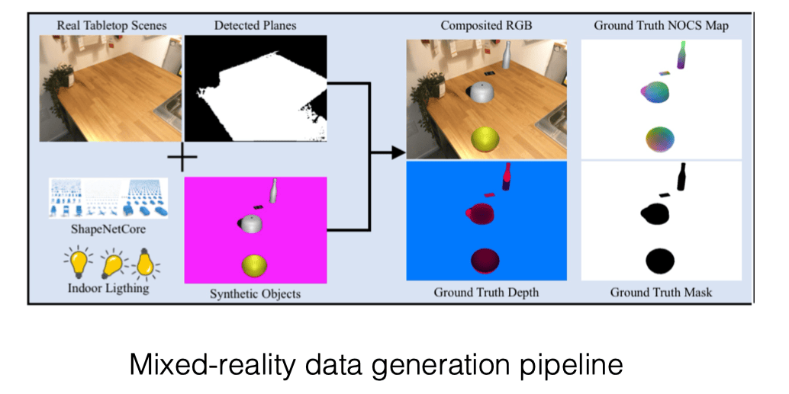
Real Tabletop Scenes＝真实桌面场景；Detected Planes＝检测平面；Indoor Lighting＝室内光照；Synthetic Objects＝合成物体；Composited RGB＝合成彩色图；Ground Truth NOCS Map、Depth、Mask＝真实规范坐标图、深度、掩码；Mixed-reality data generation pipeline＝混合现实数据生成流水线。图中真实背景加渲染物体，自动产生监督标注。
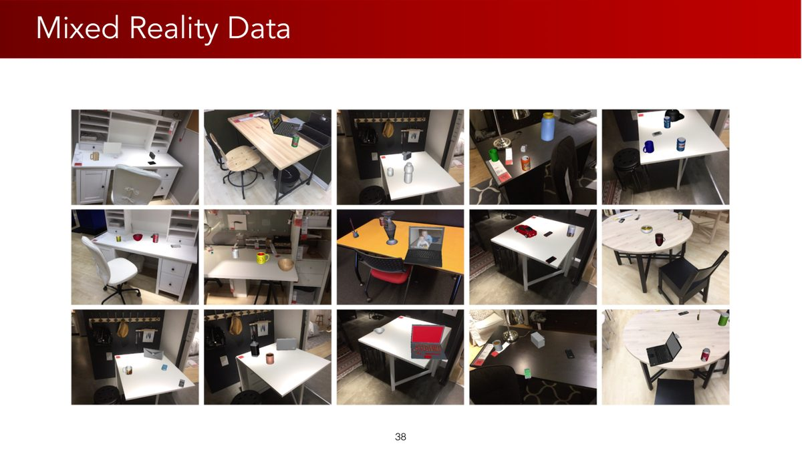
Mixed Reality Data＝混合现实数据
多幅图像展示真实桌面背景上的合成物体及不同布局。
读图提示：关注背景、物体位置、光照与遮挡变化；外观自然程度仍影响合成到真实的迁移。
实践中发现简单混合仍有 Gap——合成前景与真实背景的分界太明显，分割网络学到的经验难迁移。解法：Co-Training——用真实分割数据集（COCO）+ 合成数据混合训练 Mask R-CNN（真实数据只监督分割，不参与 NOCS 映射训练）。
课程强调合成数据的重要性：真实数据获取昂贵，合成数据能提供可扩展的几何监督。理解这一思路时，也应比较真实、合成与混合数据在具体任务上的表现。
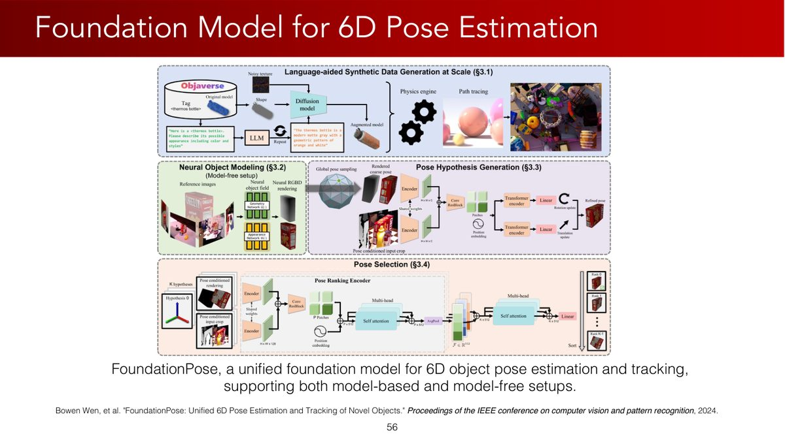
FoundationPose是统一的六维物体位姿估计与跟踪基础模型，支持model-based（有模型）与model-free（无CAD模型）设定
图含Language-aided Synthetic Data Generation at Scale（语言辅助的大规模合成数据生成）、Neural Object Modeling（神经物体建模）、Pose Hypothesis Generation（位姿假设生成）、Pose Selection（位姿选择）
引用Wen等CVPR 2024。
读图提示：无CAD模型并非完全无先验，仍需相应参考观测来建立对象表示；不要混同于只输入任意一张图即可。
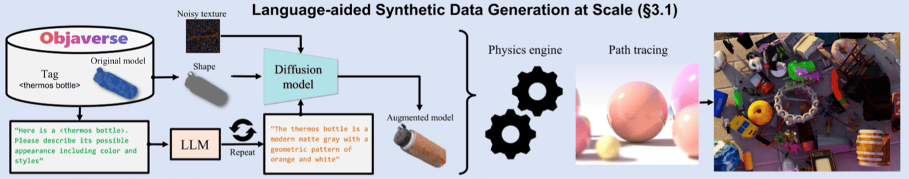
Language-aided Synthetic Data Generation at Scale＝语言辅助的大规模合成数据生成；Objaverse＝三维资产库；LLM＝大语言模型；Diffusion model＝扩散模型；Physics engine＝物理引擎；Path tracing＝路径追踪；Shape／Appearance＝形状／外观。图展示FoundationPose的合成数据流水线，未展示位姿误差评估结果。
评价位姿方法时，可以沿着任务流程检查：ICP精修受遮挡、对称性与初值影响；合成数据的收益需在真实任务上验证。类别级与部件级方法使用不同层次的几何先验，选择时结合目标物体、接触区域和任务要求。
5机器人技术的五代演进
课程笔记将机器人操作技术概括为五个阶段，帮助比较各类系统如何组织感知与动作。这是一种教学分类（核心链条：$\text{pose} \to \text{grasp} \to \text{motion planning} \to \text{control}$）：
| 代际 | 技术 | 特点 |
|---|---|---|
| 一代 | 工业机器人 | 经典示教／轨迹重放，可配合具体工程中的传感与反馈（第 1 章的「复读机」） |
| 二代 | 位姿预测 | 物体预先定义，轨迹由预测位姿规划得出（第 5 章） |
| 三代 | 抓取预测 | 直接预测抓取位姿（第 7 章） |
| 四代 | 动作规划预测 | 端到端输出动作轨迹，可闭环纠错 |
| 五代 | 完全闭环 + 语义推理 | 视觉、语言与动作模型结合语义信息与执行反馈；闭环能力仍需具体系统实现 |
判断闭环时，可以检查一点：如果执行过程中根据新估计不断调整动作，整个任务层系统就形成反馈闭环。估计速度描述计算效率，闭环则要求观测参与后续动作修正。
6抓取稳定性：Force 与 Form Closure
位姿知道了，抓取位姿也有了，最后一个问题：这个抓取稳不稳？两个判据（课件 p63-64）：
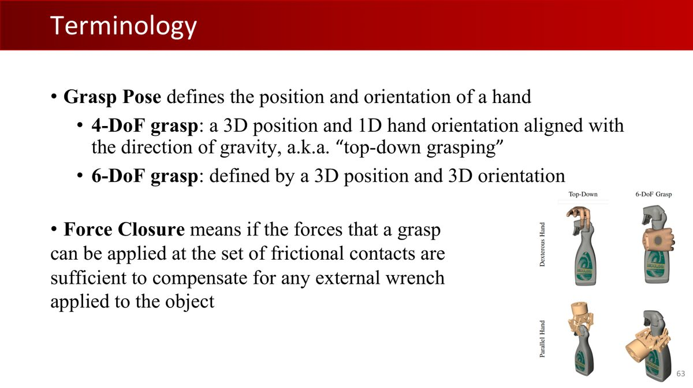
Grasp Pose＝手的位置与朝向
4-DoF抓取＝三维位置加沿重力方向对齐后的一个旋转自由度
6-DoF＝三维位置加三维朝向
Force Closure＝接触允许施加的力足以补偿物体受到的任意external wrench（外部力螺旋）。
读图提示：wrench包含力与力矩，不能只译成外力。定义一般不限制力大小，实际电机和材料限制要另行检验。
力闭合（Force Closure）：在给定接触位置、法向与摩擦模型下，允许的接触力可合成用于抵抗任意方向外部力螺旋的力螺旋。力螺旋（wrench）同时包含力与力矩；理论定义通常不限制接触力大小。王老师原话：「以某一组力在某一组接触点抓起来后，物体需要任意方向的加速度都可以提供。」
形闭合（Form Closure）：仅靠几何约束完全锁死刚体（不依赖摩擦力）。
物理定义更精确（课件 p64）：力闭合 = 接触力螺旋锥（wrench cones）的正张成（positive span）是整个力螺旋空间；形闭合 = 一组刚性固定装置完全固定刚体。在一阶刚性接触模型下，无摩擦力闭合与一阶形闭合等价；有摩擦时可用较少接触抵抗扰动。力闭合是稳健抓取的常用设计条件。对于有限载荷任务，也可能存在稳定但未达到完整力闭合的抓取；评价时应结合实际外载、关节输出力、摩擦系数和物体承载能力。
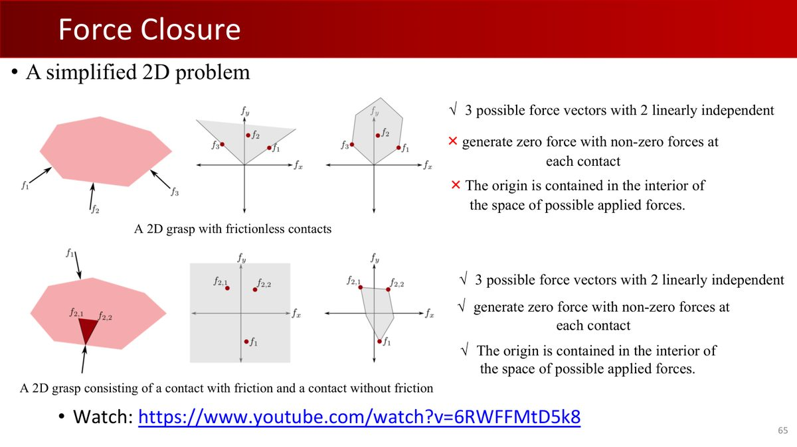
A simplified 2D problem＝二维简化问题
上例为无摩擦接触：有3个力方向且两方向线性无关，但无法用各接触非零正力合成零力，原点不在可行力空间内部
下例为一个有摩擦、一个无摩擦接触：满足这些条件
原页给出Modern Robotics视频链接。
读图提示：图只把力向量画在二维平面。完整平面刚体还需转矩，w=(f_x,f_y,τ)，应在三维力螺旋空间判断；光看二维力的凸包不足以证明完整力闭合。
2D 简化版的理解：若干接触点的可行力向量（受摩擦锥约束）如果正张成整个平面（即原点在力向量的凸包内部），任意外力都能被平衡。这个二维例子只检查平移力；完整平面刚体的判据还需包含转矩。
接触点 $r$ 处的力 $f$ 产生力矩 $r\times f$，空间力螺旋可写为 $w=(f,r\times f)$。完整平面刚体为 $w=(f_x,f_y,\tau_z)$，是3维；完整空间刚体是6维。摩擦锥限制力方向，映射到物体坐标后才得到接触力螺旋锥。判定完整力闭合时，既要检查各方向的平移力，也要检查绕轴转矩。参见Modern Robotics：力闭合。
回归 vs 生成：抓取建模的选择
一种简单的抓取学习设定是单输出回归：预测一个抓取位姿。但遮挡和对称性使一个物体通常有多个可行抓取（多峰分布）——在平方误差监督下，单输出回归可能趋向条件均值，落在两个峰之间。因此，把抓取建模为生成问题（预测一个分布，采样多个候选）更合适。这是第 7 章（GraspNet、条件生成模型）的主线。
7本章小结
| 核心概念 | 一句话解释 |
|---|---|
| ICP | 最近邻对应 + Procrustes 的迭代精修；标准点到点目标单调不增，但不保证全局正确配准 |
| 位姿精度 vs 抓取 | 容错阈值依赖物体、接触区域和夹爪策略 |
| NOCS | 类别级统一参考系（旋转对齐+平移/尺寸归一化），同像素构成规范坐标与深度坐标点对；给定内点对应后Umeyama闭式求解；RANSAC还需多次假设检验 |
| Sim2Real Gap | 合成与真实分布差异；混合现实 + Co-Training 是经典解法 |
| 五代技术 | 重放 → 位姿 → 抓取 → 端到端动作 → LLM 语义闭环 |
| Force / Form Closure | 摩擦力平衡任意外力 / 纯几何锁死；给定模型下抵抗任意方向外部力螺旋的设计条件，仍需检验有限力与任务载荷 |
| 回归 vs 生成 | 抓取多峰分布 → 生成式建模（下一章主角） |
第 7 章直击三代技术：抓取检测——GraspNet 系列如何用神经网络从点云直接生成抓取，摩擦锥、条件生成模型与大规模合成数据全线登场。
8动手实践
作业 2 已在第 5 章介绍。本章另设 ICP 与 Umeyama 练习：亲手实现最近邻匹配、刚体拟合和尺度求解，巩固位姿估计中的几何计算。
练习 1：numpy 实现 ICP（30 分钟）
import numpy as np
def icp(P, Q, max_iter=50, tol=1e-6):
"""点云配准：P (3,n) 源点云 → 对齐 Q (3,m) 目标点云，返回 (R, t, P_aligned)"""
P = P.copy()
R_total, t_total = np.eye(3), np.zeros(3)
for it in range(max_iter):
# 1. 找最近邻对应（暴力版即可，点少）
corr = []
for p in P.T:
j = np.argmin(np.linalg.norm(Q.T - p, axis=1))
corr.append(Q[:, j])
Q_corr = np.array(corr).T
# 2. 中心化
cP, cQ = P - P.mean(1, keepdims=True), Q_corr - Q_corr.mean(1, keepdims=True)
# 3. 带约束 Procrustes（第 5 章公式）
U, _, Vt = np.linalg.svd(cQ @ cP.T)
D = np.diag([1, 1, np.linalg.det(U @ Vt)])
R = U @ D @ Vt
t = Q_corr.mean(1) - R @ P.mean(1)
# 4. 更新并检查收敛
P_new = R @ P + t[:, None]
movement = np.linalg.norm(P_new - P)
R_total, t_total = R @ R_total, R @ t_total + t
P = P_new
if movement < tol: break
return R_total, t_total, P
# 生成测试：非对称点云与较小位姿扰动，验证局部精修
np.random.seed(0)
Q = np.random.randn(3, 300) * np.array([[1.0], [0.7], [0.3]])
angle = 0.03
R_true = np.array([[np.cos(angle), -np.sin(angle), 0], [np.sin(angle), np.cos(angle), 0], [0, 0, 1]])
t_true = np.array([0.01, -0.02, 0.01])
P = R_true @ Q + t_true[:, None]
R, t, P_align = icp(P, Q)
print("旋转误差:", np.round(np.linalg.norm(R - R_true.T), 6))
print("平移误差:", np.round(np.linalg.norm(t + R_true.T @ t_true), 6)) # 应接近 0自测：上面的变换方向是P→Q，因此构造P=R_true Q+t_true后，正确输出应为 $R_{true}^\top$ 与 $-R_{true}^\top t_{true}$。把初始角度改大、删去一半目标点或加入离群点，记录是否失配；把这些结果与完全重合点云的测试对照，可以观察ICP对初值、重叠范围和离群点的敏感性。
练习 2：Umeyama 相似变换（20 分钟）
在练习 1 基础上加一个缩放系数 $s$（NOCS 的 7 DoF 拟合）：
def umeyama(P, Q):
"""7DoF 相似变换：s*R*p + t = q（P、Q 已一一对应）"""
cP, cQ = P - P.mean(1, keepdims=True), Q - Q.mean(1, keepdims=True)
# 对应点最小二乘尺度；无噪声时也等于 RMS 比
U, singular_values, Vt = np.linalg.svd(cQ @ cP.T)
D = np.diag([1, 1, np.linalg.det(U @ Vt)])
R = U @ D @ Vt
s = np.sum(singular_values * np.diag(D)) / np.sum(cP**2)
t = Q.mean(1) - s * R @ P.mean(1)
return s, R, t
# 测试：随机 3D 点云 + 随机相似变换
P0 = np.random.rand(3, 100)
s_t, R_t, t_t = 1.5, np.eye(3), np.array([1., -2., 3.])
s, R, t = umeyama(P0, s_t * R_t @ P0 + t_t[:, None])
assert np.allclose(s, s_t, atol=1e-9) and np.allclose(R, R_t, atol=1e-9) and np.allclose(t, t_t, atol=1e-9)
print("✓ Umeyama 恢复的 (s, R, t) 与真值一致")练习 3：仅二维平移力平衡判断（15 分钟，选做）
给定 3 个接触点的法向力方向（2D），忽略力矩，只判断这些力方向能否正张成整个平面，即原点是否严格位于满维凸包内部：
def force_closure_2d(normals):
"""normals: (C,2) 法向力；仅平移，原点严格在满维凸包内部"""
from scipy.spatial import ConvexHull
if len(normals) < 3 or np.linalg.matrix_rank(normals - normals.mean(0)) < 2:
return False
hull = ConvexHull(normals)
# 半空间 n·x+b ≤ 0：x=0 严格在内部要求所有 b < 0
return bool(np.all(hull.equations[:, -1] < -1e-10))
print(force_closure_2d(np.array([[1,0],[-0.5,0.866],[-0.5,-0.866]]))) # 120°分布 → True
print(force_closure_2d(np.array([[1,0],[1,0.1],[-0.5,0.2]]))) # 集中在同一侧 → False三个练习共约 65 分钟，只需 numpy（练习 3 加 scipy）。做完练习 1 建议把 ICP 接到第 5 章作业 2 的位姿估计输出上试试，比较精修前后的位姿误差与抓取结果。
附A术语表
| 术语 | 解释 |
|---|---|
| ICP | 迭代最近点：最近邻对应 + Procrustes 的迭代点云配准算法 |
| Chamfer 距离 | 点云间最近邻距离之和，ICP 的对应搜索目标 |
| KD-tree | 空间划分数据结构，加速最近邻搜索 |
| Point-to-Plane ICP | 考虑目标点局部平面结构的 ICP 变体，收敛更快 |
| NOCS | 归一化物体坐标空间：类别级统一参考系（王鹤 CVPR 2019 Oral） |
| Umeyama 算法 | 求解 7 DoF 相似变换（缩放+旋转+平移）的解析方法 |
| 9 DoF amodal bounding box | 含位姿（6D）+ 尺寸（3D）的完整包围盒（含被遮挡部分） |
| Sim2Real Gap | 合成数据与真实数据的分布差异导致的性能落差 |
| Mixed Reality Data | 真实背景 + 合成前景的数据合成方式（CAMERA 数据集） |
| Co-Training | 真实数据（只监督分割）+ 合成数据混合训练 |
| min-of-N loss | 对称物体位姿估计的损失：N 个等价位姿中取最小误差 |
| 力闭合（Force Closure） | 允许接触力产生的力螺旋正张成整个力螺旋空间；须包含力矩且另检验执行器限制 |
| 形闭合（Form Closure） | 纯几何约束完全固定刚体，不依赖摩擦 |
| 摩擦锥（Friction Cone） | 接触点可行力的集合，由摩擦系数决定 |
附B课件 66 页完整索引
原版 Lecture 6 课件共 66 页（GitHub 原文件）。下表逐页列出内容及在本教程中的位置：
| 页码 | 页面内容 | 在教程中的位置 |
|---|---|---|
| p1 | 封面：Lecture 6 - Vision and Grasping II | 封面区 |
| p2 | 主题页：实例级 6D 位姿估计 | §1（回顾） |
| p3 | 实例级定义回顾（PoseCNN） | §1（回顾第 5 章） |
| p4-8 | PoseCNN 结构与结果回顾（图源 Yu Xiang） | §1（回顾第 5 章 §8.1） |
| p9 | 主题页：ICP | §2 开头 |
| p10 | ICP 定义：点云配准，最小化 $\|Q-(RP+T)\|_F$ | §2 |
| p11 | 步骤一：中心化 | §2（步骤 1） |
| p12 | 步骤二：Chamfer 距离对应（$O(|P||Q|)$，KD-tree 加速） | §2（步骤 2） |
| p13 | 步骤三：约束 Procrustes 求 $\hat{R}$、残差求 $\hat{T}$、更新 P | §2（步骤 3-4） |
| p14 | 迭代流程总结（五步） | §2 |
| p15 | 终止条件（三种） | §2（步骤 4） |
| p16 | ICP 优缺点 | §2.2 |
| p17 | ICP 变体：Point-to-Plane、Plane-to-Plane | §2.2 |
| p18 | PoseCNN + ICP 结果可视化 | §2 |
| p19 | LINEMOD 数据集（回顾） | §1（回顾） |
| p20 | 实例级局限（回顾） | §3（动机） |
| p21 | 主题页：类别级 6D 位姿估计 | §3 开头 |
| p22 | （无文字配图页） | §3 |
| p23 | NOCS（王鹤 et al., CVPR 2019 Oral） | §3 |
| p24 | 类别级目标：无需 CAD 模型估位姿与尺寸 | §3 |
| p25 | 挑战：类别内形状差异 | §3 |
| p26 | 表示：NOCS | §3 |
| p27 | 步骤 1：旋转归一化 | §3（三步归一化） |
| p28 | 步骤 2：平移归一化（中心化） | §3（三步归一化） |
| p29 | 步骤 3：尺寸归一化 | §3（三步归一化） |
| p30 | 类别级位姿定义：NOCS → 相机空间的变换 | §3 |
| p31 | 流程：图像 → NOCS map → 反投影 → RANSAC 拟合 | §3.1 |
| p32 | 网络：Mask R-CNN 检测器，输出 9 DoF amodal bbox | §3.1 |
| p33-35 | 挑战：形状差异、数据与标注 | §4（动机） |
| p36 | CAMERA：混合现实数据生成流水线 | §4 |
| p37 | 数据统计：300K 图像、31 场景、1085 模型 | §4 |
| p38 | 混合现实数据示例 | §4 |
| p39 | 真实世界数据集 | §4 |
| p40 | 真实数据统计：8K RGB-D、18 场景、42 实例、6 类别 | §4 |
| p41 | 位姿拟合：Umeyama 7D + RANSAC | §3.1（步骤 4） |
| p42-43 | Umeyama 细节与尺寸估计（Read by Yourself） | §3.1 |
| p44 | 对称处理：min-of-N loss | 附录 A（术语） |
| p45 | 结果可视化 | §3.3 |
| p46 | 消融：NOCS vs 直接回归（5°/10° 精度） | §3.3 |
| p47 | 应用：TransNet 透明物体（ECCV 2022 Workshop） | §4 更新框 |
| p48 | 应用：6-PACK 类别级跟踪（ICRA 2020） | §4 更新框 |
| p49 | 应用：CAPTRA 关节物体跟踪（ICCV 2021 Oral） | §4 更新框 |
| p50 | GAPartNet：可泛化可操作部件（CVPR 2023 Highlight） | §4 更新框 |
| p51 | GAPartNet 数据统计（PartNet-Mobility 对比） | §4 更新框 |
| p52-54 | GAPartNet 输入输出与真机实验 | §4 更新框 |
| p55 | 主题页：位姿估计基础模型 | §4（FoundationPose） |
| p56 | FoundationPose（Wen et al., CVPR 2024） | §4 |
| p57 | 合成数据瓶颈与 LLM/扩散模型增强的合成 pipeline | §4 |
| p58 | 位姿初始化（检测 → 平移初始化 → 旋转采样） | §4 |
| p59 | 位姿条件裁剪（crop 精修） | §4 |
| p60 | 机器人应用与 YCB-Video 结果 | §4 |
| p61 | 主题页：物体抓取 | §6 开头 |
| p62 | 抓取与抓取合成定义（Newbury 综述） | §6（回顾第 5 章） |
| p63 | 抓取位姿回顾 + Force Closure 定义 | §6 |
| p64 | 物理定义：摩擦锥正张成 vs 刚性固定 | §6 |
| p65 | 2D 简化力闭合例子（附视频链接） | §6 |
| p66 | 结尾页：下集预告 Vision and Grasping III | 页脚（下一章预告） |
附C参考资源
- 课程官网：pku-epic.github.io/Intro2EAI_2025
- 本教程素材来源仓库：zhuozhiyongde/Embodied-Artificial-Intelligence-2025Spring-PKU
- 本章课件：
Slides/Lecture06_03_24.pdf（66 页） - 本章笔记原文：
Notes/06-Vision-and-Grasping-II.md
ICP实现和评价参见Open3D官方ICP教程；接触条件参见Modern Robotics：形闭合。
延伸阅读
- Wang et al., NOCS, CVPR 2019 Oral（arXiv）：类别级位姿估计原始论文
- Wen et al., FoundationPose, CVPR 2024：位姿估计基础模型
- Umeyama 算法参考：zpl.fi 的 Kabsch-Umeyama 教程
- 力闭合 2D 示例视频：YouTube 搜索「6RWFFMtD5k8」（课件 p65 推荐）
- Newbury et al., Deep Learning Approaches to Grasp Synthesis（综述）
自测：逐步验证完整流程
- ICP停止更新，能否说明得到真实位姿？
- NOCS图与深度图中相同像素分别表示什么坐标？
- 一个尺度系数如何恢复长、宽、高三个尺寸？
- 为何二维力方向包围原点还不足以证明平面刚体力闭合？
参考思路
停止可能是错误局部解；前者是规范物体坐标，后者经反投影为度量相机坐标；尺度要乘规范包围盒三轴范围；平面刚体还具有旋转自由度，必须同时检查转矩。